成对生成真值、完整因子干预、有限参数剖面与公开 EOG 冻结预测重分析
2026-10-21
本套件结果由固定任务计划、逐拟合记录、summary.json 和验证记录持有。旧归属与观测语义结果只提供设计背景，不计为本套件新实验。
合成核心复用现有非线性 Balloon 模型与观测项 owner；保留公共证据读取范围明确，不读取受保护数据。
新增非线性反事实矩阵的 24 个任务、5,760 个参数 profile 节点与 1,536 个选定端点全部有效；2,880 个实际优化节点均达到声明的收敛条件，其余是已知驱动／初态的前向评估。无噪声、无失配时可以恢复真实 tau，因此以下冲突不能只归因于优化超时或观测噪声。
额外 Hb 项在真实共同成分存在且增益正确时有用：物理 Hb 恢复误差从约 0.28 降至 0.046，tau 正确率由 8/16 提高到 16/16。但是，当真实改变的是未建模的 1.25 倍增益、没有真实共同项时，它仍降低观测残差，却损害物理 Hb 和 tau 恢复。
真实 tau=3 秒、增益=1.25、无共同项时，加入额外项使观测 NRMSE 0.19515→0.19068，却使物理 Hb NRMSE 0.18159→0.21932，tau 正确率 16/16→8/16。这个成对反例直接说明：更好的可见拟合不保证参数更真实。
216 个保留公开评价窗口的新 EOG 事件负担分层支持眼动相关 EEG 电压的预测，但没有把 EOG 变成心肺或组织来源锚点。当前已核验本地读取面仍未建立 ECG、呼吸或短距离 fNIRS 的可用独立观测；不据此声称整个数据集不存在这些记录。
本报告区分四个问题。拟合误差问模型能否重现给定观测；可辨识性问近乎相同的观测能否由不同参数或分量解释；模型失配问真实生成过程是否位于候选模型的表达范围内；数值优化问求解器是否到达其声明的收敛标准。四者需要不同证据，不能由一条平滑曲线或一个很小的残差代替。
同一观测可以通过改变驱动、血管初态、响应参数与结构化额外项得到相近预测。正则项能够选出其中一条更平滑、更接近参考状态的解，却不自动增加来自观测的独立信息。反过来，优化失败也不能直接证明数学上不可辨识：失败单元首先是数值证据，必须保留并在比较分母中显式出现。
本组实验把预测效用与生理恢复分开评价。真实数据只有隐藏观测评分及稳定性证据，没有可直接比较的真实神经驱动、转运时间或浅表成分。已知真值的合成数据可以评价恢复误差，但其结论依赖生成模型、信号强度、背景和观测算子。
本套件直接检验：在真实驱动与初态固定时，如果真实转运时间发生变化，模型会把它恢复为参数变化，还是吸收到另一个驱动、初态或共同 Hb 项？如果真正改变的是观测增益或额外 Hb 成分，释放转运时间又会不会产生貌似合理但错误的生理变化？
旧 observation-semantics 的机制候选比较使用已知驱动和初态，属于机制可分性的有利 oracle 条件。本轮需要真正重新拟合未知驱动和初态，并在各响应参数节点保留完整结果；因此它回答的是实际逆问题中多个未知量能够互相补偿时的恢复能力。
预期并非每一项正则越弱越好，或每一类额外项都应删除。额外项可能缓解观测失配，也可能吸收真实响应。科学问题是其帮助与损害分别在什么生成条件下出现，以及可见拟合改善是否伴随真实物理成分或参数恢复恶化。
每个独立生成身份先产生一条驱动、一组合法物理初态和一份观测噪声，再建立共享基准。干预只改变预声明的转运时间或观测机制；驱动、初态、背景与噪声实现保持相同。基准与干预为同一生成身份的配对条件，不能当成两个独立样本。
| 因素 | 对照 | 干预 | 含义 |
|---|---|---|---|
| 真实 tau | 2 秒 | 3 秒 | 真实响应参数变化 |
| Hb 观测增益 | 1 | 1.25 | 共同正增益失配，不改变状态真值 |
| 共同 Hb 项 | 0 | 1 个预定幅度 | 固定 HbT 方向的平滑额外成分 |
| 噪声条件 | 无噪声：8 个生成身份 | 0.2 训练 RMS：16 个身份 | 分开观察优化／歧义与噪声影响 |
tau×增益×共同项为完整 2×2×2 因子矩阵。无噪声八身份为有噪声十六身份的预声明子集，跨噪声不累计成二十四个独立身份。
八种机制条件包含所有主效应和交互：tau 不变时，增益与共同项可以分别或同时出现；tau 改变时也遍历相同观测失配。每个身份的 tau=2、增益=1、共同项=0 为共享基准，差值指标均与该基准配对。固定驱动、初态与噪声使变化来源可复核；不得将八格当成八个独立生成身份。
共同 Hb 项的生成方向与拟合方向均为 (0.65,0.35)，且使用相同四个时间基底模式。普通拟合仍需估计未知系数、驱动和初态，因此这不是把成分真值直接交给推断器；但它是有利的、基底匹配的阳性控制，不是从未知观测中发现来源。增益 1.25 因子提供另一种有意的观测失配。未知成分方向、超出四模式的频谱或时延不在本轮矩阵内，不能据此宣称全面失配稳健性。
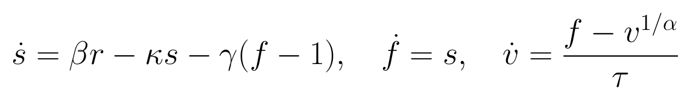
r 为条件神经驱动坐标；s 为流量变化状态；f、v 为相对基线流量和容积；tau 为以秒计的转运时间。其余系数固定，不因某个拟合不好而逐窗改变。
本套件实际使用当前 BalloonParameters 的固定值：神经血管有效增益 beta=1、kappa=0.65、gamma=0.32、alpha=0.32、E0=0.32、P0=1、Q0=0.35；只有 tau 按生成条件或拟合网格改变。这里的 kappa 是实际实现的 0.65，不沿用其他历史套件的 0.64。驱动由周期 24、15、9、6 秒的正弦组合生成，随机相位随生成身份变化，整体 RMS 固定为 0.04。初态接近但不严格等于静息；每个世界保持同一初态。
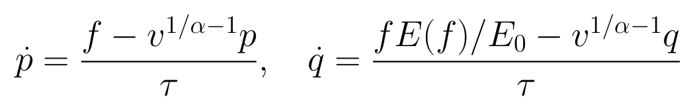
p、q 为归一化总 Hb 与脱氧 Hb 状态；E(f) 为冻结的流量相关提取函数。动力学状态不是已被观测直接测到的独立信号，正性和 Hb 物理域在积分时检查。
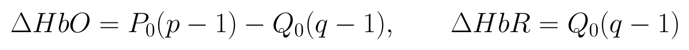
P0、Q0 为声明的模型基准，非当前被试绝对浓度标定。本轮直接观察 120 个 0.25 秒网格点的 canonical 输出，不作实测五秒参考或跨窗滤波；尺度来自独立训练合成的 RMS。这是比实测缺失参考信息更有利的理想化观测。
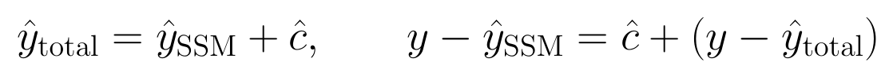
c 为固定方向、有限时间基底和二次约束的额外 Hb 项，没有独立来源标签。完整剩余项包含结构化额外项和最终拟合残差；把残差很小解释为纯生理恢复会忽略额外项的补偿。
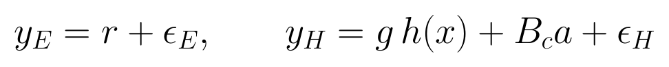
g 为 1 或 1.25；B_c 为四模式、固定 HbT 方向基底，a 是未知生成系数。gain 改变观测而不改变状态真值。普通拟合的物理分量仍与增益前的无噪声 h(x) 比较；因此拟合带增益观测更好可能同时使物理恢复更差。
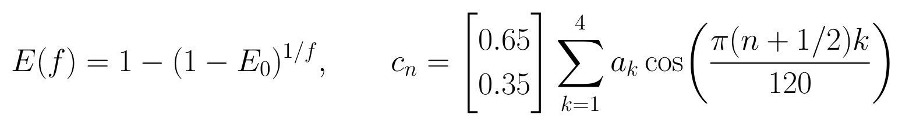
n 为 0 到 119 的网格索引。额外项只有四个非 DC 余弦系数；这些系数的生成 RMS 固定为 0.015，该值不是每条 Hb 波形 RMS，也不是生理正常范围。四个模式的最高频率约 0.0667 Hz，报告不能将它称为任意形状的噪声模型。
r 由上述确定性波形生成，拟合时在 120 个时点作为自由驱动，以二阶差分曲率作约束；这里没有另外模拟或估计 OU 驱动过程噪声。血管状态按当前 RK4 实现连续传播，每 0.25 秒使用四个子步，并检查正性与 Hb 物理域。噪声为独立时间点、独立观测通道的高斯扰动，标准差为各通道冻结训练 RMS 的 0.2；它不是从真实传感器噪声估计出来的值，也不是 Student-t 后验校准。
每个 tau 网格节点均重新拟合实际未知的驱动和五个血管初态，额外项开启时同时估计或精确消元其系数。所有候选保持同一可见信息、数值预算、起点规则和物理约束，不能只在真值节点提供真驱动或真初态。
| 拟合臂 | 当前输入中实际已知 | tau 选择 | 用途 |
|---|---|---|---|
| fixed_no_common | 有噪声 EEG/Hb；无共同项 | 固定 2 秒 | 受限基线 |
| fixed_common | 同上；可估计四模式共同项 | 固定 2 秒 | 仅增加观测表达能力 |
| free_no_common | 有噪声 EEG/Hb；无共同项 | 五节点总目标最小 | 响应参数补偿 |
| free_common | 同上；可估计共同项 | 五节点总目标最小 | 响应与观测项竞争 |
| oracle_mismatch | 真实增益与共同项用于校正观测 | 五节点；仍拟合驱动与初态 | 定位观测校准的作用 |
| oracle_driver_no_common | 真实驱动和五个真实初态 | 五节点；无共同项 | 定位动态未知量的作用 |
| oracle_driver_common | 真实驱动与初态；共同项系数仍未知 | 五节点；同共同项惩罚 | 条件机制可分性上界 |
| oracle_both | 驱动、初态、增益和共同项均有真值 | 五节点 | 全部指定歧义解除的上界 |
四个普通臂可由实际观测运行，四个 oracle 臂使用实测不可获得的生成真值；不能作为公平方法排名或实测来源分离结果。
驱动曲率、初态偏离及额外项系数惩罚是工程正则。拟合比较须分开记录观测数据项、各正则项与总目标；tau 最优节点是相对于该总目标及有限网格而言。若真值误差减少但总目标增加，不能删除该结果；如果总目标更小而真值恢复更差，恰好说明优化目标与生理恢复目标不等价。
有限网格的目标剖面不是后验分布，也不是参数置信区间。固定其他生理参数只说明该实验条件下的恢复；不能据此外推多个自由参数同时可识别。积分精度、收敛标准与失败记录需独立核验，避免将离散误差或预算不足误称为生理歧义。
额外项惩罚尺度在四个独立训练生成身份（101–104）上，从 0.5、1、2 三个乘数选择。选择时固定真实 tau，以物理 Hb 与驱动真值 NMSE 之和评价；这属于使用生成器真值的合成方法选择。评价身份（201–216）不参与选择，但这一条件比缺乏真值的实测校准更有利，结论不能省略这个限制。
oracle_mismatch 和 oracle_both 在校正坐标中拟合：先减去真实共同项，再除以真实增益；噪声尺度同步除以增益。它们的观测拟合误差重新映射回原有噪声观测坐标，物理恢复仍在增益前的 canonical 坐标评分。oracle_driver 两臂固定真实驱动和五个初态，不再对这些已知量施加优化先验，但未知共同项保留同一惩罚。因此比较 oracle 与普通臂的绝对总目标没有公平方法排名含义；应比较恢复误差及所移除的未知性。
完整评价矩阵为 16 个有噪声身份加 8 个预声明无噪声身份，每身份八个生成世界、六个条件拟合 family、五个 tau 节点，共 5,760 个 profile 节点。其中 2,880 个节点重新优化驱动和初态，其余使用已知驱动／初态前向评估。固定 tau 的四个普通输出复用对应 profile，不额外重复拟合；最终八种输出臂共 1,536 个条件端点。失败与 profile 不完整应按噪声和机制分层呈现。
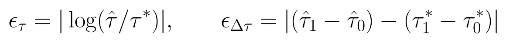
星号表示生成真值，0/1 表示同一生成身份的基准和干预。绝对 log 误差对相同比例的高估与低估对称；变化误差以秒计。两者不能由观测 NRMSE 代替。
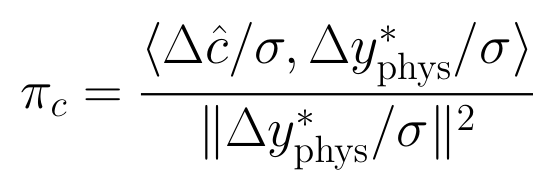
只有真实生理变化非零时定义。它不是能量占比，可以为负或超过 1；真实共同项也可能恰好沿同一方向变化，因此该原始投影不能单独称为错误归属。真 tau 不变时分母为零，记录为不适用。σ 在本套件表示冻结训练 RMS，而非 SD。
同时报告有噪声观测目标的拟合 NRMSE、无噪声物理 Hb 的恢复 NRMSE、驱动恢复 NRMSE、额外项恢复误差及 tau 误差。各归一化分母来自四个独立训练合成身份中基准世界的 RMS，不是减均值后的 SD、每窗局部尺度或实测噪声标定。图中 RMS 归一化误差与其他实测套件的训练 SD 归一化误差不能混为同一指标。变化指标在共享基准／干预身份上计算，再跨生成身份汇总；正则强度不按评价真值择优。
核心图将可见拟合差与生理恢复差放在同一配对散点图：每点为一个生成身份及机制条件，明确标出“拟合改善、恢复恶化”的象限和数量。拟合成功子集与计划全分母分别给出，未收敛、物理域拒绝和网格不完整不能被悄悄省略。
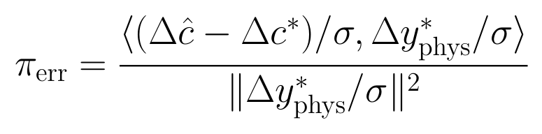
该量等于同一生成身份的原始投影减去精确共同项 oracle 的原始投影。它消除了真实共同项与真实 tau 响应天然重叠的影响。此项是在结果核对时追加的版本化解释诊断，原 endpoints 和主结果保持不变；它不是新的确认性主端点。
原始 Single-Trial HTML 说明明确记录了 Einthoven I/II 心电与胸带呼吸，并称这些信号随其他数据提供。当前中央 registry 登记的接口为 EEG／fNIRS；统一 native reader 从 EEG cnt.mat 的通道标签分离 HEOG/VEOG，只实现 EOG 辅助输出，没有已建立的 ECG 或呼吸读取与时钟接口。
2026-09-24 的保留 source_audit 在三名被试的九条记录中核实 30 个头皮 EEG 加 HEOG/VEOG，系统生理辅助候选为空；它还保留 36 个明确文件及六组对应压缩包成员的检查。本轮引用该已完成审计，不将其伪装成本日新的原始读取。其结论仅限所查本地发布面：没有建立可用 ECG／呼吸流；不能据此断言原研究未采集，或全部可能的本地／外部发布内容都不存在。
已有 EOG 实验回答眼动相关电压、光学瞬态或延迟 Hb 的关联；EOG 不是心肺活动、短距离 fNIRS 或浅表血流的替代标定。真实独立来源观测缺失时，本轮合成锚点或 oracle 只能定位“如果增加某种信息可能改善什么”，不能给实测额外项授予来源名称。
本轮不重新读取原始 EOG 或拟合新的事件预测器，而是重分析 observation_semantics/20261009_v2 中冻结的被试外预测。依据 owning measured_plan 中全部窗口构造身份分母，再接入 event_inventory 事件数；无事件窗口保留为零，不能只分析检测到事件的成功子集。
按数据集使用训练窗口事件数的中位数形成高／低负担阈值，评价窗口不参与阈值选择。分别比较真实 EOG 与训练模板、错被试 EOG、非环绕移位 EOG 的预测 NRMSE；先按窗口配对，再在被试内平均。高低负担不是随机干预，阈值两侧的对象可能不同，因此结果只能描述关联，不能宣称眼动造成了某个生理成分。
另外计算评价被试平均事件数与真实 EOG 预测误差的 Spearman 相关，作为描述性关联；其未校正 p 值不能支持跨端点挑选显著结论。原 attribution 的 anchor_paired 表仅作来源语义背景，不计为今天的新拟合。当前源审计只核对既有证据及 reader 文本，没有新增原始 ECG／呼吸文件读取。
原冻结 EEG 电压预测使用 0.5–15 Hz EOG，在线性 ridge 中保留 -0.04、0、0.04 秒邻近时点，目标为六个 EEG 电压通道。事件来自垂直 EOG 偏离与水平 EOG 斜率，阈值按训练幅度确定；Hb 读出使用 0、0.25、0.5、1 秒及 2、4、6、8 秒事件特征，加训练条件时间模板。评分支持为窗口内 [8,21) 秒，分母为原训练目标 SD。光学 OD_jump 仅在 Single-Trial 有对应测量支持；不在另一个数据集中补造。
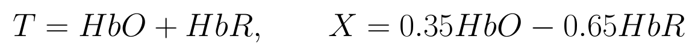
T 为总 Hb 变化坐标，X 为固定比例的色团对比；二者不是两个独立新增传感器，X 也不是血氧饱和度。它们在旧预测流程内已经训练与冻结，本轮仅分层其预测误差。
训练校准的 96 个候选拟合全部收敛，独立训练生成真值选择共同项系数尺度乘数 2，即系数惩罚尺度 0.030。正式 24 个噪声任务全部完成；5,760 个 profile 节点均收敛，1,536 个选定端点有效，没有不完整 profile 或数值失败。无噪声八身份是十六身份的子集，独立生成身份总数为 16。
| 真 tau/秒 | 真增益 | 真共同项 | 观测误差：无→有 | 物理 Hb 误差：无→有 | tau 正确：无→有 |
|---|---|---|---|---|---|
| 2 | 1 | 0 | 0.1679→0.1666 | 0.0398→0.0438 | 16/16→16/16 |
| 2 | 1 | 1 | 0.3259→0.1669 | 0.2773→0.0464 | 8/16→16/16 |
| 2 | 1.25 | 0 | 0.1977→0.1918 | 0.2285→0.2453 | 12/16→3/16 |
| 2 | 1.25 | 1 | 0.3510→0.1922 | 0.3455→0.2432 | 12/16→4/16 |
| 3 | 1 | 0 | 0.1679→0.1665 | 0.0383→0.0427 | 16/16→16/16 |
| 3 | 1 | 1 | 0.3186→0.1669 | 0.2840→0.0463 | 8/16→16/16 |
| 3 | 1.25 | 0 | 0.1952→0.1907 | 0.1816→0.2193 | 16/16→8/16 |
| 3 | 1.25 | 1 | 0.3429→0.1915 | 0.3391→0.2094 | 11/16→10/16 |
有噪声条件，每格十六个生成身份；“无→有”比较 free_no_common 与 free_common，二者均在同一五节点网格选择 tau。误差为训练 RMS 归一化 NRMSE，越小越好。正确率是选中真 tau 网格节点，不是连续参数区间覆盖。
来源：/SSD_2/pid-mcm-implementation/experiments/runs/physiology_semantic_tokenizer/mechanism_attribution/20261021_v1/endpoints.csv
当真实共同项存在而增益为 1 时，加入匹配的共同项同时改善拟合、物理恢复与 tau：真 tau=2 秒时物理 Hb NRMSE 0.27727→0.04645，tau 正确率 8/16→16/16；真 tau=3 秒时 0.28403→0.04633，同样 8/16→16/16。对应物理误差改善的配对描述区间为 [0.19761,0.26168] 和 [0.20877,0.26513]。这支持“正确描述确实存在的额外观测成分可以保护恢复”，而不是支持任意增加额外项。
当增益与共同项同时失配时，波形恢复与参数恢复还能进一步分离。例如真 tau=2 秒、增益 1.25、有共同项，加入共同项使物理 Hb 误差 0.34553→0.24321，但 tau 正确率由 12/16 降至 4/16。即使干净 Hb 波形更接近真值，也不能据此断言响应参数更真实。
下列三张图使用相同的八个生成世界和八个拟合臂。行分别给出真实 tau、增益与共同项状态；列缩写为 F0/FC：固定 tau 无／有共同项，T0/TC：自由网格 tau 无／有共同项，OM：已知增益与共同项、仍重拟合驱动和初态，OD0/ODC：已知真实驱动与五个初态、无／有可拟合共同项，OB：这些 oracle 量全部已知。每格为有噪声十六身份的均值，全部拟合均完成。
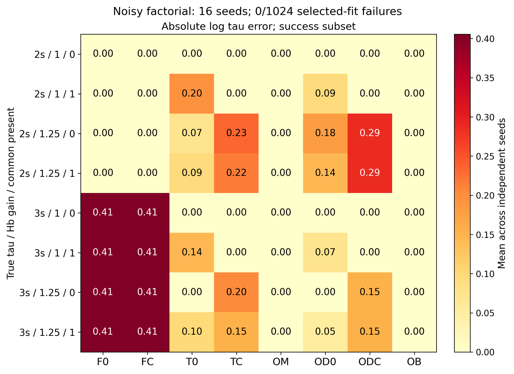
来源：/SSD_2/pid-mcm-implementation/experiments/runs/physiology_semantic_tokenizer/mechanism_attribution/20261021_v1/figures_v2/figure_manifest.json
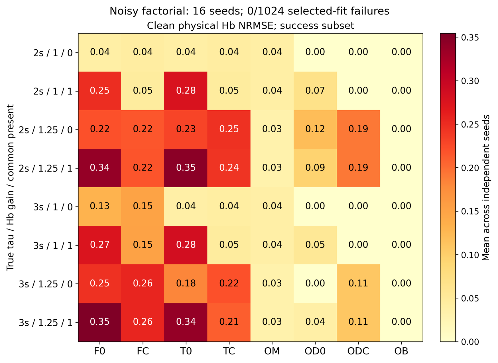
来源：/SSD_2/pid-mcm-implementation/experiments/runs/physiology_semantic_tokenizer/mechanism_attribution/20261021_v1/figures_v2/figure_manifest.json
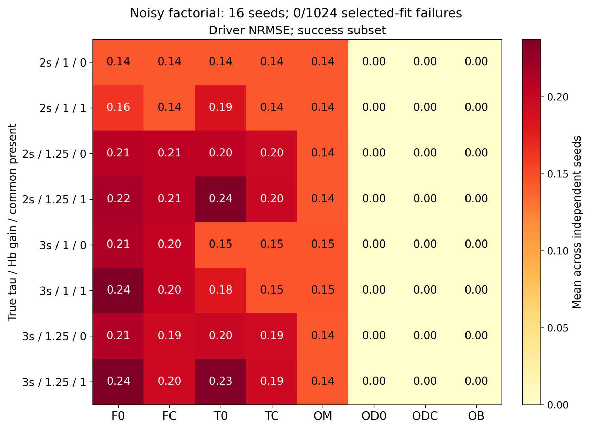
来源：/SSD_2/pid-mcm-implementation/experiments/runs/physiology_semantic_tokenizer/mechanism_attribution/20261021_v1/figures_v2/figure_manifest.json
| 真 tau/秒 | 指标 | 无共同项-有共同项 | 95% 配对描述区间 |
|---|---|---|---|
| 2 | 观测 NRMSE | 0.00584 | [0.00408, 0.00763] |
| 2 | 物理 Hb NRMSE | -0.01683 | [-0.02430, -0.00883] |
| 2 | tau 绝对 log 误差 | -0.16182 | [-0.23374, -0.08990] |
| 3 | 观测 NRMSE | 0.00447 | [0.00287, 0.00612] |
| 3 | 物理 Hb NRMSE | -0.03773 | [-0.05822, -0.01613] |
| 3 | tau 绝对 log 误差 | -0.20273 | [-0.30410, -0.10137] |
仅看真实增益 1.25、真实共同项为 0 的条件。正值表示加入共同项降低误差，负值表示加入后恢复更差；所有比较为十六个配对身份。区间未作多重比较确认性校正。
来源：/SSD_2/pid-mcm-implementation/experiments/runs/physiology_semantic_tokenizer/mechanism_attribution/20261021_v1/paired_comparisons.csv
真 tau=2 秒时，观测 NRMSE 从 0.19767 降到 0.19183，但物理 Hb 误差从 0.22851 增到 0.24533，tau 正确率 12/16→3/16。真 tau=3 秒时，观测误差 0.19515→0.19068，物理误差却 0.18159→0.21932，tau 正确率 16/16→8/16。两种 tau 条件下，平均观测改善与平均物理损害的配对描述区间都保持相反方向。
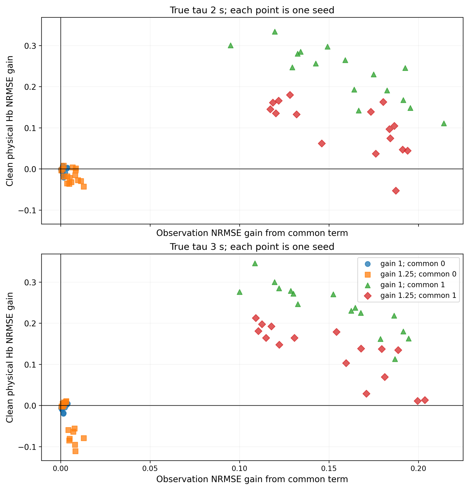
来源：/SSD_2/pid-mcm-implementation/experiments/runs/physiology_semantic_tokenizer/mechanism_attribution/20261021_v1/figures_v2/figure_manifest.json
真增益 1.25、无真实共同项时，上述右下象限分别出现于 12/16 与 11/16 个身份。增益正确且确有共同项时，两种 tau 都是 0/16 落入这个冲突象限，显示额外项的效果依赖于其是否对应真实生成成分。增益与共同项同时存在时分别为 1/16、0/16；这不意味着 tau 全部恢复，因为物理波形误差与参数误差是不同终点。
在没有真实共同项且增益正确的条件，仍有 12/16 身份出现很小的拟合改善和物理损害，但 tau 全部正确。这主要体现额外自由度拟合噪声的代价。不能把这些小幅噪声效应与增益失配下较大的参数偏移混为同一种严重程度。
无噪声、增益正确、没有真实共同项时，两种 tau 的普通自由模型均在 8/8 身份选择真实节点；物理 Hb NRMSE 约 0.000047，说明基本生成、观测与求解闭合。加入共同项后仍 8/8 正确，物理误差约 0.000051–0.000052。
无噪声、真 tau=2 秒、增益 1.25、无真实共同项时，不带共同项的自由模型为 8/8 tau 正确；加入共同项后为 0/8。与此同时，观测 NRMSE 0.10641→0.09750，物理 Hb NRMSE 0.22165→0.25396。因为噪声已经移除，这个成对结果支持“观测增益失配被响应和额外项补偿”的解释，不能只归咎于观测随机噪声。
全部记录达到声明的梯度／物理域收敛标准，且没有预算型失败；这能排除本轮明显的未完成拟合，却不证明每个非线性节点均为全局最优。每节点从零驱动／静息起点求解，网格只有五点，仍需将结论限定为该实现、预算、正则和候选集合中的机制诊断。
当提供真实增益和共同项用于观测校正、仍让模型重新估计全部驱动与初态时，八个有噪声世界的 tau 都是 16/16 正确，物理 Hb NRMSE 约 0.03186–0.03982。相反，仅知道真实驱动与初态、却保留错误增益模型，并不能保证参数恢复。这个对照定位了独立观测标定的价值，但这些 oracle 量尚不是当前实测接口中已知的信息。
真值 oracle 的观测 NRMSE 约 0.20090；普通匹配模型在有噪声、无失配条件可把观测误差降到约 0.167，却留下约 0.039 的物理 Hb 误差。真实生成轨迹不追逐随机噪声，因此它的有噪声残差反而可以大于拟合轨迹。这是另一个必须分开“重现观测”和“恢复真值”的具体例子，不能把 oracle 的较大观测残差当作真值模型失败。
样例在运行前指定为生成身份 201、噪声 0.2、真 tau=3 秒、增益 1.25、存在真实共同项；它不是按误差或结论强弱挑出的代表。所有曲线使用完整当前窗进行离线拟合，不是未来预测。
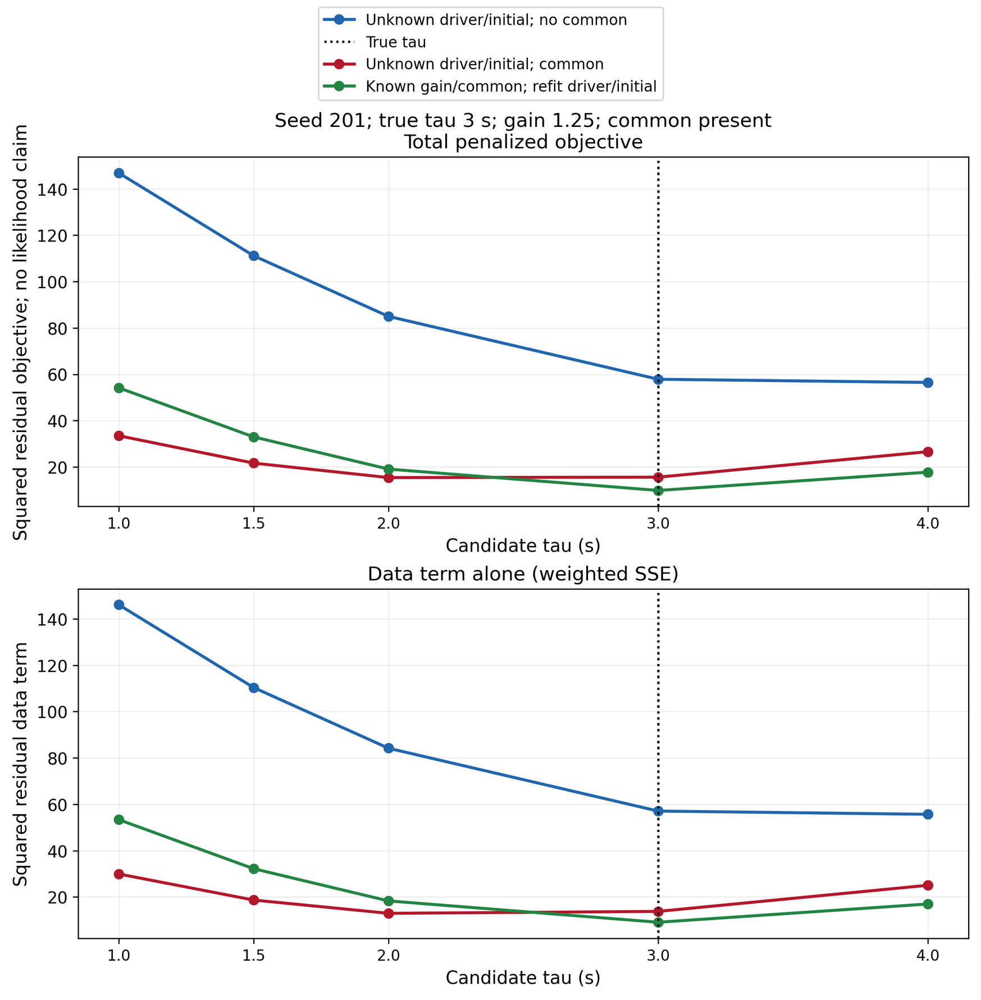
来源：/SSD_2/pid-mcm-implementation/experiments/runs/physiology_semantic_tokenizer/mechanism_attribution/20261021_v1/figures_v2/figure_manifest.json
此样例无共同项模型选择 tau=4 秒，带共同项模型选择 tau=2 秒，只有校准 oracle 选择真实 3 秒。带共同项曲线在 2 与 3 秒附近目标相近，说明单独展示一个“最优参数”会掩盖条件剖面的平坦程度。正确节点与其他节点之间的差异依赖数据项和工程惩罚，不能按该图构造校准置信区间。
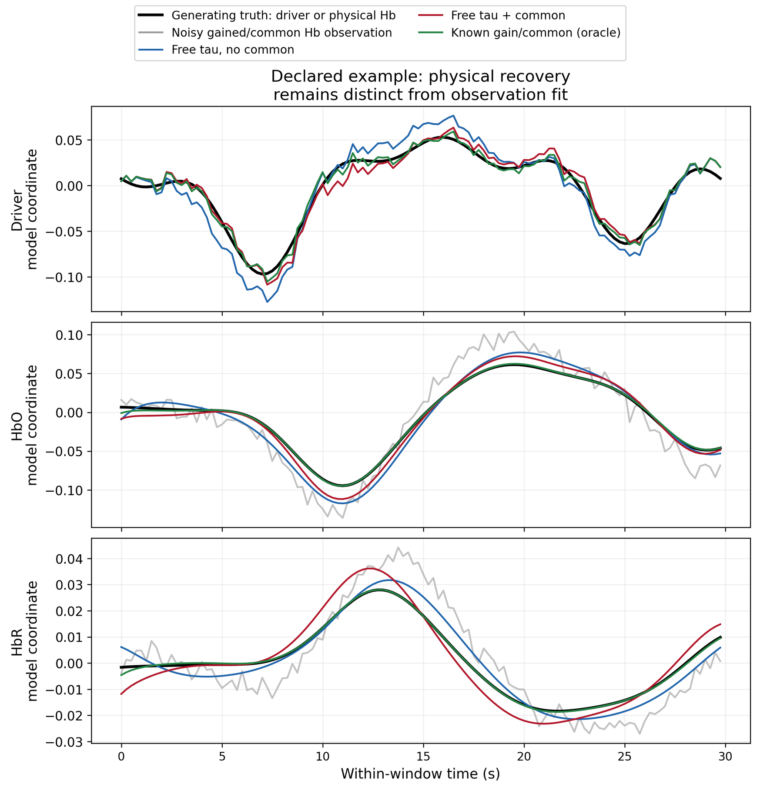
来源：/SSD_2/pid-mcm-implementation/experiments/runs/physiology_semantic_tokenizer/mechanism_attribution/20261021_v1/figures_v2/figure_manifest.json
| 方法 | 选中 tau/秒 | 观测 NRMSE | 物理 Hb NRMSE | 驱动 NRMSE |
|---|---|---|---|---|
| 无共同项自由 tau | 4 | 0.39319 | 0.29657 | 0.36508 |
| 有共同项自由 tau | 2 | 0.18958 | 0.28338 | 0.21235 |
| 已知增益/共同项 oracle | 3 | 0.15884 | 0.03224 | 0.15286 |
同一预定样例的端点值。加入共同项显著改善观测，驱动也更接近真值，但 tau 仍错误；必须联合看参数、分量与完整观测。
来源：/SSD_2/pid-mcm-implementation/experiments/runs/physiology_semantic_tokenizer/mechanism_attribution/20261021_v1/endpoints.csv
若直接把额外项变化投影到真实 tau 响应上，正确的共同项 oracle 在“真 tau=3、有共同项”时平均投影也为 0.12840。这是两种真实变化在波形方向上的自然重叠，不是 oracle 错误分配。因此原始投影不能直接叫“泄漏率”或“tau 被吸收的百分比”。
为避免这一误读，本次追加版本化的解释诊断，以每个身份的估计投影减去精确共同项 oracle 投影；原冻结 endpoints、profile 和主摘要未覆盖。这个差值等于额外项估计误差对真实物理变化的有符号投影，仍不是能量占比。
| 增益 | 真实共同项 | 额外项误差投影均值 | 95% 描述区间 |
|---|---|---|---|
| 1 | 无 | 0.00116 | [-0.00087, 0.00305] |
| 1 | 有 | 0.00007 | [-0.00417, 0.00472] |
| 1.25 | 无 | 0.12498 | [0.06371, 0.18317] |
| 1.25 | 有 | 0.09284 | [0.03363, 0.15010] |
真 tau=3、有噪声、free_common；每格十六身份。增益正确时估计误差投影接近零，未建模增益存在时沿真实 tau 响应方向的额外项误差增大。真 tau=2 的变化分母为零，全部记不适用。
来源：/SSD_2/pid-mcm-implementation/experiments/runs/physiology_semantic_tokenizer/mechanism_attribution/20261021_v1/component_projection_excess_summary_v1.csv
这里支持的是特定失配如何沿参数响应方向被补偿，并不意味着可以把某个实测成分命名为增益误差、浅表血流或真实 tau 变化。该判断成立是因为生成器分别保存了参数、物理轨迹、增益和共同项真值。
新的负担分层包括 216 个冻结评价窗口：Single-Trial 112 窗／14 名被试，Simultaneous 104 窗／13 名被试。训练事件计数中位阈值分别为 17 和 18；严格超过阈值为高负担。两数据集高负担各 31 窗，低负担分别 81 与 73 窗；同一被试可以出现在高低两层，不能把各层被试数相加。
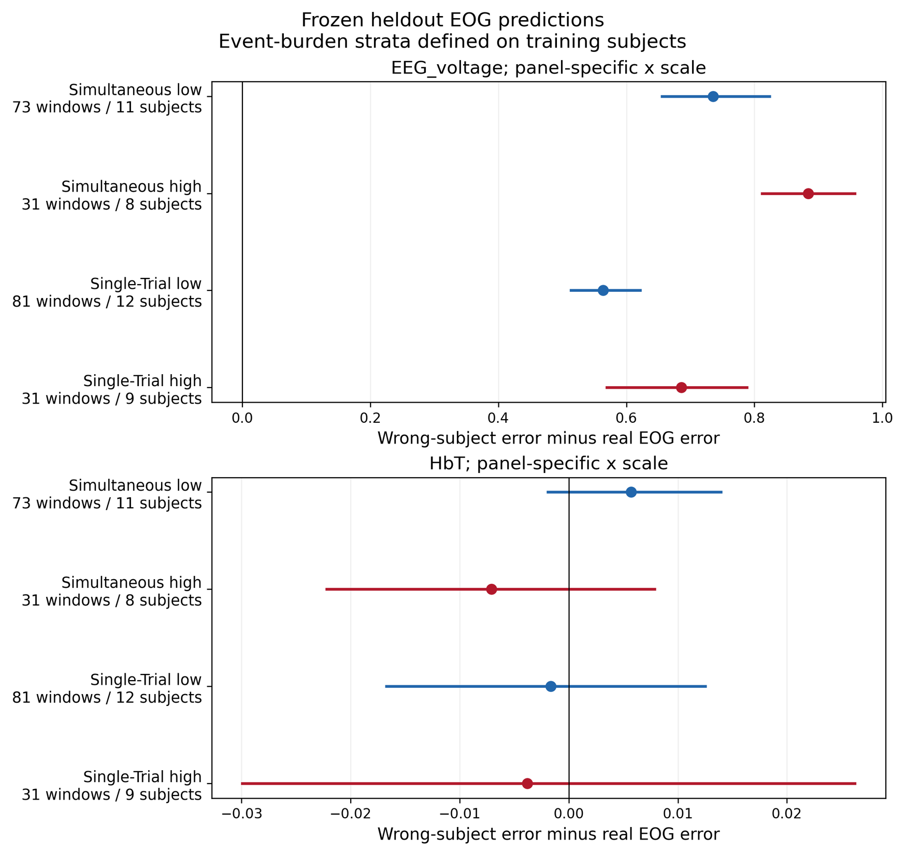
来源：/SSD_2/pid-mcm-implementation/experiments/runs/physiology_semantic_tokenizer/mechanism_attribution/20261021_v1/figures_v2/figure_manifest.json
| 数据集/负担 | 窗口/被试 | EEG 电压改善 | HbT 改善 | HbX 改善 |
|---|---|---|---|---|
| Single-Trial 高 | 31/9 | 0.68564 | -0.00382 | 0.00168 |
| Single-Trial 低 | 81/12 | 0.56381 | -0.00167 | 0.00075 |
| Simultaneous 高 | 31/8 | 0.88381 | -0.00709 | 0.00334 |
| Simultaneous 低 | 73/11 | 0.73539 | 0.00571 | 0.00450 |
所有数值均为错被试 EOG NRMSE 减真实 EOG NRMSE。EEG 电压四个区间均大于零，HbT/HbX 所有这些对照区间均跨零；该表不把高低层差异当作随机干预效应。
来源：/SSD_2/pid-mcm-implementation/experiments/runs/physiology_semantic_tokenizer/mechanism_attribution/20261021_v1/retained_EOG_burden.csv
真实 EOG 对 EEG 电压的预测具有稳定配对优势，符合眼动相关电活动进入头皮电位的关联证据。但同样的 EOG 并未在本分层中为 HbT/HbX 建立相对于错配控制的稳定增量。Single-Trial 高负担 OD_jump 相对错配的改善反而为 -0.02590，区间 [-0.06722,-0.00049]；这也不能被改写成普遍的眼动光学成分解释。
被试平均事件数与 EEG 电压误差的 Spearman 相关，在 Single-Trial 为 0.58681、Simultaneous 为 0.33516；Hb 指标方向与强弱不一致。该分析只有 14 或 13 个独立被试，并列多个端点，未校正 p 值仅作描述。眼动负担更高时某个预测对照收益较大，与总体预测误差随负担增加并不矛盾，因为二者的基准不同。
本套件给出三个层次的证据。第一，匹配的共同项能够消除确实存在的共同观测成分并改善参数恢复。第二，未建模增益会使相同额外项与响应参数互相补偿，出现更低观测残差却更差物理恢复及参数恢复。第三，实测 EOG 只能提供特定关联，尚不能充当缺失的心肺或组织来源观测。
下一步优先考虑独立观测增益、时钟或来源锚点的核定，并用真实参数变化保护测试检查任何新增组件。增加潜变量、放宽正则或加入更多共同时间基底，都应同时报告拟合、隐藏预测、参数、驱动和成分变化的结果。只有总残差变小，不足以决定新组件具有正确生理含义。
本轮不证明所有生理参数永远不可恢复，也不证明某一种测量来源在所有公开数据中不存在。结论限定于当前六状态方程、五点 tau 网格、固定初态策略、匹配共同项基底、四训练身份选定的正则、独立生成身份以及明确的保留公开端点。更复杂失配、未知基底方向和真实独立标定仍未在本轮验证。
独立验证通过：24/24 任务、5,760/5,760 profile 节点、1,536/1,536 端点均完成；训练与评价身份互斥。成对世界的噪声与驱动重生成最大差均为 0，目标函数各分项闭合的最大误差为 5.68×10^-14；物理 Hb 指标由保留数组独立重算。统计区间为固定模型、固定生成器与固定网格下的 2,000 次 seed bootstrap，未宣称多重比较后的确认性效应。
七张图均保存为 240 dpi PNG，图源、固定样例身份、计数与数值表由 figure_manifest.json 关联。追加投影误差诊断保留独立版本和来源，不覆盖原始主端点。实际数据边界核验引用既有九记录、三被试审计；本轮没有新增原始 ECG／呼吸读取或受保护评价。
experiments/configs/physiology_semantic_tokenizer/mechanism_attribution_v1.yaml
src/inference/shared_driver_reconstruction.py
src/inference/shared_driver_attribution.py
src/data/registry.py
src/data/unified_physiology.py
data/EEG+NIRS Single-Trial/Open access dataset for simultaneous EEG and NIRS Brain-Computer Interfaces (BCIs).html
experiments/runs/physiology_semantic_tokenizer/data_quality_audit/20260924_hbo_hbr_calibration_v2/source_audit.json
experiments/runs/physiology_semantic_tokenizer/observation_semantics/20261009_v2/summary.json
/SSD_2/pid-mcm-implementation/experiments/runs/physiology_semantic_tokenizer/mechanism_attribution/20261021_v1/summary.json
/SSD_2/pid-mcm-implementation/experiments/runs/physiology_semantic_tokenizer/mechanism_attribution/20261021_v1/endpoints.csv
/SSD_2/pid-mcm-implementation/experiments/runs/physiology_semantic_tokenizer/mechanism_attribution/20261021_v1/profiles.csv
/SSD_2/pid-mcm-implementation/experiments/runs/physiology_semantic_tokenizer/mechanism_attribution/20261021_v1/endpoint_summary.csv
/SSD_2/pid-mcm-implementation/experiments/runs/physiology_semantic_tokenizer/mechanism_attribution/20261021_v1/paired_comparisons.csv
/SSD_2/pid-mcm-implementation/experiments/runs/physiology_semantic_tokenizer/mechanism_attribution/20261021_v1/calibration.json
/SSD_2/pid-mcm-implementation/experiments/runs/physiology_semantic_tokenizer/mechanism_attribution/20261021_v1/verification.json
/SSD_2/pid-mcm-implementation/experiments/runs/physiology_semantic_tokenizer/mechanism_attribution/20261021_v1/source_audit.json
/SSD_2/pid-mcm-implementation/experiments/runs/physiology_semantic_tokenizer/mechanism_attribution/20261021_v1/component_projection_excess_v1.json
/SSD_2/pid-mcm-implementation/experiments/runs/physiology_semantic_tokenizer/mechanism_attribution/20261021_v1/component_projection_excess_summary_v1.csv
/SSD_2/pid-mcm-implementation/experiments/runs/physiology_semantic_tokenizer/mechanism_attribution/20261021_v1/figures_v2/figure_manifest.json
/SSD_2/pid-mcm-implementation/experiments/runs/physiology_semantic_tokenizer/mechanism_attribution/20261021_v1/component_projection_excess_verification_v1.json